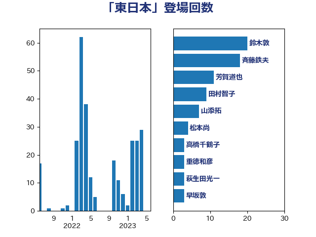

単語「東日本」

| 鈴木敦 | 国民民主党 | 20 回 |
| 斉藤鉄夫 | 公明党 | 18 回 |
| 芳賀道也 | 国民民主党 | 11 回 |
| 田村智子 | 日本共産党 | 9 回 |
| 山添拓 | 日本共産党 | 7 回 |
| 松本尚 | 自由民主党 | 4 回 |
| 高橋千鶴子 | 日本共産党 | 3 回 |
| 重徳和彦 | 立憲民主党 | 3 回 |
| 萩生田光一 | 自由民主党 | 3 回 |
| 早坂敦 | 日本維新の会 | 3 回 |
| 岡本あき子 | 立憲民主党 | 3 回 |
| 奥下剛光 | 日本維新の会 | 3 回 |
| 大西英男 | 自由民主党 | 3 回 |
| 堤かなめ | 立憲民主党 | 3 回 |
| 中野英幸 | 自由民主党 | 3 回 |
| 一谷勇一郎 | 日本維新の会 | 3 回 |
| 青木愛 | 立憲民主党 | 2 回 |
| 道下大樹 | 立憲民主党 | 2 回 |
| 若松謙維 | 公明党 | 2 回 |
| 紙智子 | 日本共産党 | 2 回 |
| 礒崎哲史 | 国民民主党 | 2 回 |
| 石井苗子 | 日本維新の会 | 2 回 |
| 枝野幸男 | 立憲民主党 | 2 回 |
| 杉本和巳 | 日本維新の会 | 2 回 |
| 岸田文雄 | 自由民主党 | 2 回 |
| 小泉進次郎 | 自由民主党 | 2 回 |
| 小山展弘 | 立憲民主党 | 2 回 |
| 宮本岳志 | 日本共産党 | 2 回 |
| 塩田博昭 | 公明党 | 2 回 |
| 加田裕之 | 自由民主党 | 2 回 |
| 仁比聡平 | 日本共産党 | 2 回 |
| 中川康洋 | 公明党 | 2 回 |
| 鶴保庸介 | 自由民主党 | 1 回 |
| 馬淵澄夫 | 立憲民主党 | 1 回 |
| 階猛 | 立憲民主党 | 1 回 |
| 阿部弘樹 | 日本維新の会 | 1 回 |
| 門山宏哲 | 自由民主党 | 1 回 |
| 鈴木義弘 | 国民民主党 | 1 回 |
| 鈴木淳司 | 自由民主党 | 1 回 |
| 金子恵美 | 立憲民主党 | 1 回 |
| 金子恭之 | 自由民主党 | 1 回 |
| 野上浩太郎 | 自由民主党 | 1 回 |
| 遠藤良太 | 日本維新の会 | 1 回 |
| 赤羽一嘉 | 公明党 | 1 回 |
| 豊田俊郎 | 自由民主党 | 1 回 |
| 谷公一 | 自由民主党 | 1 回 |
| 西岡秀子 | 国民民主党 | 1 回 |
| 菊田真紀子 | 立憲民主党 | 1 回 |
| 荒井優 | 立憲民主党 | 1 回 |
| 笠井亮 | 日本共産党 | 1 回 |
| 穂坂泰 | 自由民主党 | 1 回 |
| 福島伸享 | 無所属 | 1 回 |
| 石井正弘 | 自由民主党 | 1 回 |
| 田村まみ | 国民民主党 | 1 回 |
| 田所嘉徳 | 自由民主党 | 1 回 |
| 田名部匡代 | 立憲民主党 | 1 回 |
| 田中健 | 国民民主党 | 1 回 |
| 玉木雄一郎 | 国民民主党 | 1 回 |
| 玄葉光一郎 | 立憲民主党 | 1 回 |
| 牧野たかお | 自由民主党 | 1 回 |
| 渡辺猛之 | 自由民主党 | 1 回 |
| 渡辺博道 | 自由民主党 | 1 回 |
| 深澤陽一 | 自由民主党 | 1 回 |
| 浜口誠 | 国民民主党 | 1 回 |
| 河野太郎 | 自由民主党 | 1 回 |
| 櫻井充 | 自由民主党 | 1 回 |
| 櫛渕万里 | れいわ新選組 | 1 回 |
| 横沢高徳 | 立憲民主党 | 1 回 |
| 森山浩行 | 立憲民主党 | 1 回 |
| 柴田巧 | 日本維新の会 | 1 回 |
| 松山政司 | 自由民主党 | 1 回 |
| 朝日健太郎 | 自由民主党 | 1 回 |
| 星野剛士 | 自由民主党 | 1 回 |
| 庄子賢一 | 公明党 | 1 回 |
| 岸真紀子 | 立憲民主党 | 1 回 |
| 山崎誠 | 立憲民主党 | 1 回 |
| 小里泰弘 | 自由民主党 | 1 回 |
| 小寺裕雄 | 自由民主党 | 1 回 |
| 宮本周司 | 自由民主党 | 1 回 |
| 古川元久 | 国民民主党 | 1 回 |
| 務台俊介 | 自由民主党 | 1 回 |
| 八木哲也 | 自由民主党 | 1 回 |
| 仁木博文 | 無所属 | 1 回 |
| 五十嵐清 | 自由民主党 | 1 回 |
| 中川正春 | 立憲民主党 | 1 回 |
| 中川宏昌 | 公明党 | 1 回 |
| 下村博文 | 自由民主党 | 1 回 |
| 三木圭恵 | 日本維新の会 | 1 回 |
| おおつき紅葉 | 立憲民主党 | 1 回 |